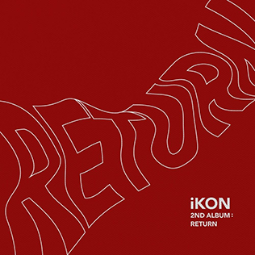
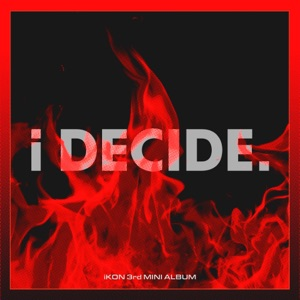

Welcome Back is the debut studio album by South Korean male group iKon. The full album was initially planned to be released on November 2, 2015. However, on October 27, 2015, YG Entertainment announced that the release of the full album would be delayed. The album was released on December 24, 2015, along with additional music videos than previously planned. Additionally, two digital singles along with accompanying music videos were released on November 16.

Return (also known as New Kids: Return) is the second studio album by South Korean male group iKon. It was released on January 25, 2018, and is the second of the group's four-part album series, The New Kids.[1] iKon's leader B.I was credited as the only record producer of the album. The album contains 12 songs including the hit lead single "Love Scenario", all written or co-written by B.I.
I Decide (stylized as i DECIDE) is the third extended play by South Korean boy band iKON. It is the first release of the band since the departure of B.I on June 12, 2019. It was released by YG Entertainment on February 6, 2020. The mini-album includes a total of five tracks, including the lead single "Dive".
Take Off is the third studio album by South Korean boy band iKon. It was released on May 4, 2023, by 143 Entertainment,[1] the first release following the expiration of their exclusive contract with YG Entertainment in December 2022.[1] The album comprises ten tracks, among which "U" serves as the lead single, while "Tantara" was pre-released on April 25, 2023. Nine out of the ten songs were either written or co-written, and co-composed by members Bobby, DK, and Ju-ne. The last three tracks of the album are solo songs by Song, DK, and Ju-ne, respectively.[2]